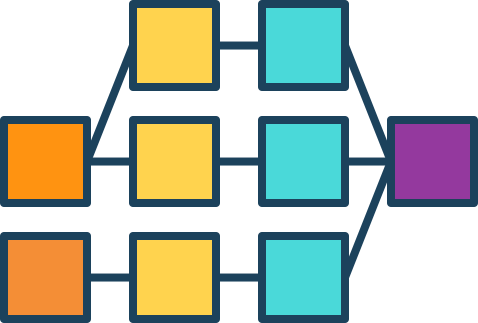
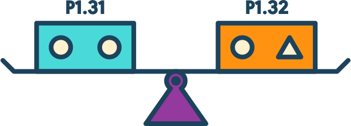
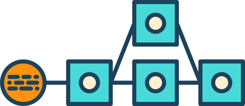

Automate and streamline your build-test-release cycle for reliable, continuous delivery of your product.
-
Model complex workflows
With its parallel and sequential execution, GoCD can easily configure dependencies for fast feedback and on-demand deployment. Its fan-in/fan-out dependency management always does the "right thing," avoiding spurious builds.
-
Easily compare builds
GoCD's ability to compare content - both files and commit messages - across any two arbitrary builds, makes it invaluable when troubleshooting a broken pipeline.
-
Clearly visualize your workflow
GoCD's Value Stream Map visualizes your end-to-end workflow in real time. Every change can be tracked from commit to deploy and back again.

Plugins
GoCD has extension points for which plugins can be created. There are numerous plugins already available, or if you don't see what you need, you can write your own.
Community
GoCD's community is 1000 members strong and growing. Through our active forum, users and contributors share best practices and openly discuss a wide range of topics including product how-tos. To join in the conversation visit our Google group.
THOUGHTWORKS OFFERS COMMERCIAL SUPPORT FOR GoCD. SIGN UP FOR EXPERT SUPPORT AND ACCESS TO ENTERPRISE ADD-ONS.
GET SUPPORT